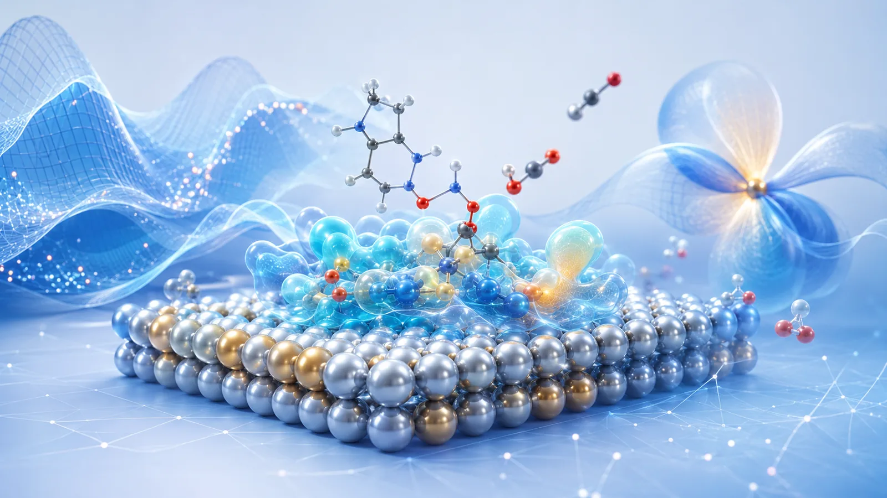

01 / SCIENTIFIC INTELLIGENCE
AI for Science
面向科研数据与知识的预测、筛选、推理和自动化工作流，让 AI 真正进入材料、化学、能源与环境研发过程。
- 候选分子 / 材料预测与筛选
- 科研智能体、RAG 与知识工作流
- 多模态科研数据建模与解释
不把工具堆成菜单。晶算量子围绕“科学智能”和“量子机理”构建核心能力，多尺度模拟作为两者之间的计算桥梁。
面向科研数据与知识的预测、筛选、推理和自动化工作流，让 AI 真正进入材料、化学、能源与环境研发过程。

聚焦第一性原理、量子化学与电子结构方法，从原子与电子尺度解释结构、能量、反应和界面机制。
AI 用于缩小搜索空间和发现规律，量子与多尺度计算用于验证机理，再将高质量计算结果回流至模型，形成下一轮优化。
讨论联合路线 →以方法能力为核心，不限定单一学科；根据具体体系组合 AI、量子与多尺度模拟。
材料发现、催化反应、分子性质、界面结构与结构—性能关系。
电池与电化学、膜与分离、污染控制、传质与过程优化。
面向实验数据、科学图谱、复杂多变量体系与跨尺度研究问题。
合肥晶算量子科技有限公司（Jingsuan Quantum）聚焦科学智能、量子与电子结构计算以及多尺度科学模拟。我们希望把数据、知识、模型和机理计算连接起来，为科研与研发团队提供更高效、更可解释的计算路径。